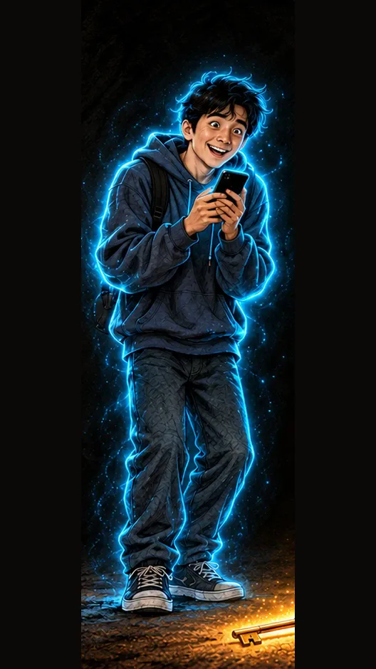

1-sahna — rasm, 9:16 (tik)
Medium close-up from beside the monitorChatGPT'ga biriktiring:

Nima bo'ladi
Xona, kecha: Diyor Google'da rasm qidiradi, oltin ramkadagi qora kvadrat kartinani ko'rib qoladi. Tovush: klaviatura
darkcyanred
Vertical 9:16 image, Medium close-up from beside the monitor, face and screen both visible. Attach the reference image of Diyor. Keep the character exactly as in the reference image: the same face, age, hair, clothes, colours and the thin cyan-blue neon outline. Scene: Diyor's small bedroom at night: a desk with a computer monitor and a small home printer, posters-free dark walls, the only light comes from the screen. DIYOR (the naive guy about 20 years old with a round boyish face, big expressive eyes, messy straight jet-black hair (never curly, never brown), a dark navy blue hoodie, jeans and sneakers; a thin bright cyan-blue neon line runs exactly along his whole outer silhouette (hair, face, hoodie, arms, legs) with a soft blue glow; nothing else in the frame has this outline) sits at the desk, his face lit by the monitor. The screen (seen at an angle) shows an image search results page: a search bar at the top, a grid of small picture thumbnails, and on the right a large preview of Kazimir Malevich's famous painting «Black Square» (1915): a large, slightly uneven black square on a white canvas border, the black paint covered with a fine web of cracks (craquelure), in a simple thin wooden museum frame, with an empty white rectangular label strip under the preview (left blank on purpose, the price is added later in editing); no logos, no readable words. Diyor leans toward the screen: eyes wide open, eyebrows raised high, lips slightly parted in a fascinated half-smile, one hand on the mouse. Diyor has exactly two arms and two hands, five fingers on each hand, every hand clearly belongs to its own arm. Style: the same hand-painted semi-realistic cartoon illustration style as the attached reference image (painterly, visible brush texture), cinematic night lighting, strong contrast, glowing neon light, dark and mysterious but colourful and eye-catching. Colour rule: the whole frame uses ONLY 3 main colours: deep night darkness (near-black navy), electric cyan-blue neon and glowing neon red; everything else is soft dark neutral shadow. Vertical 9:16. No text, no letters, no numbers, no logos, no brand names, no watermark, no subtitles.